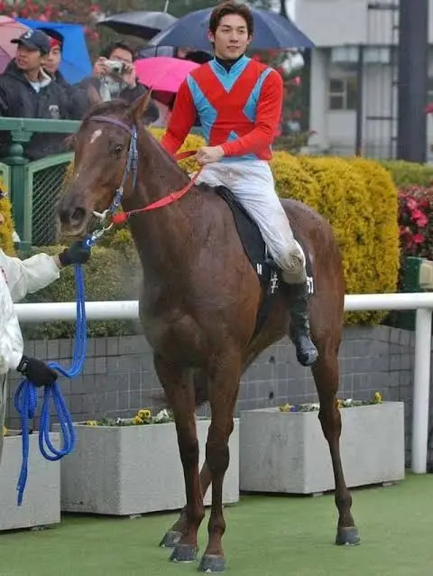
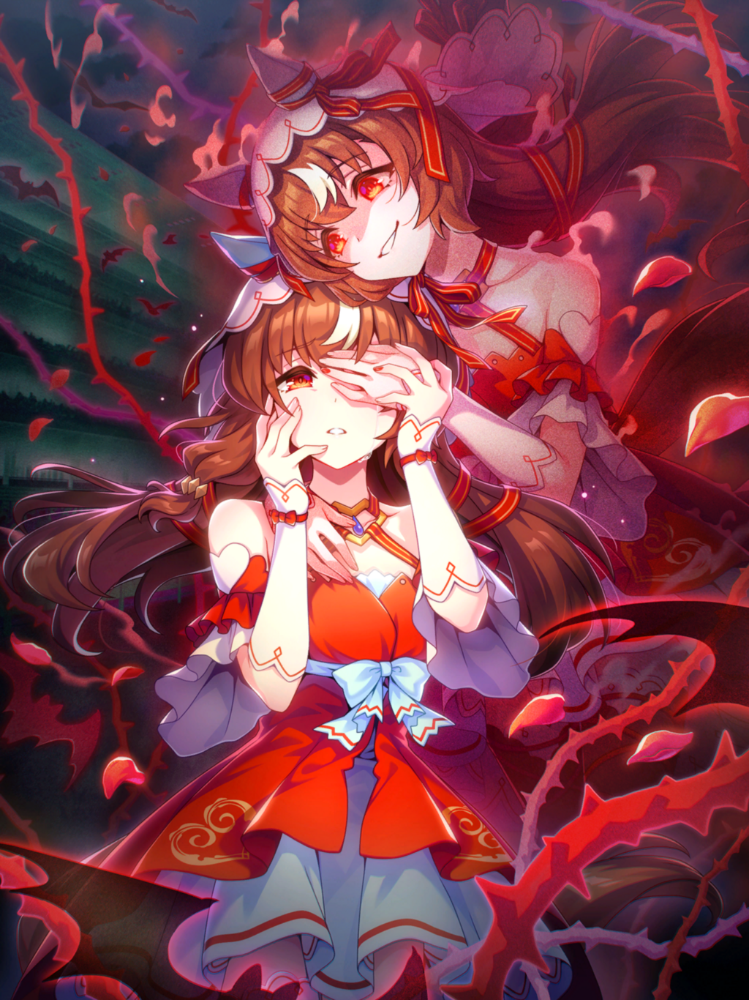
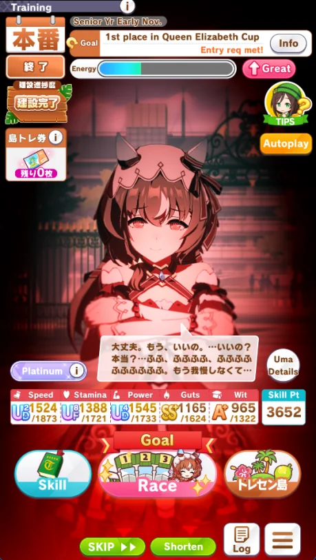
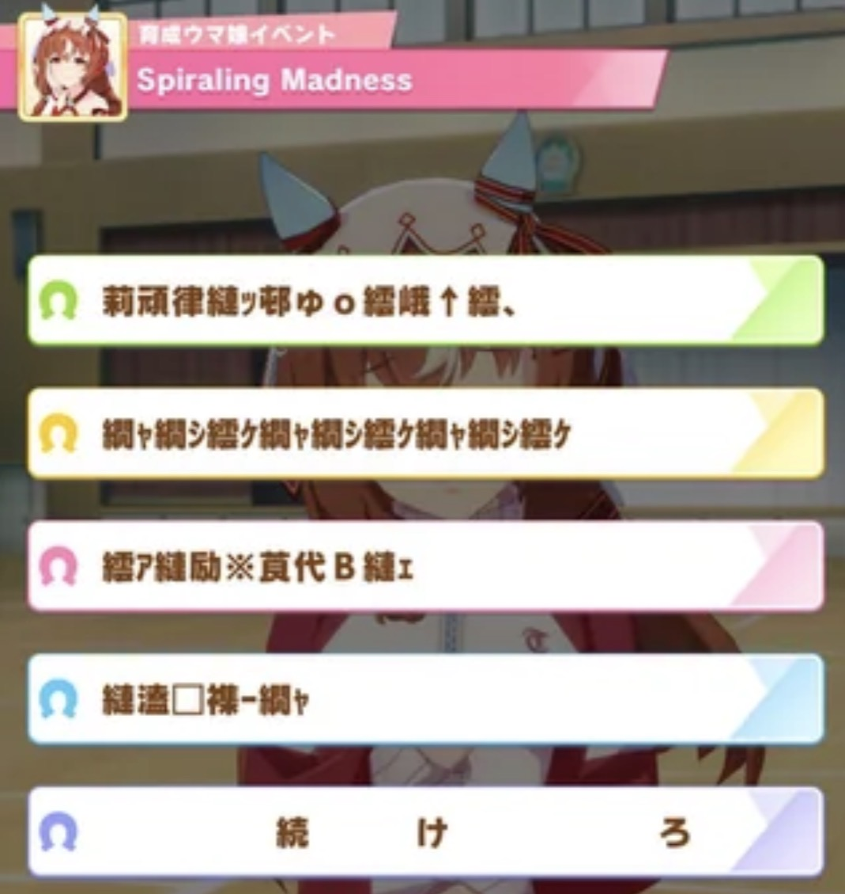
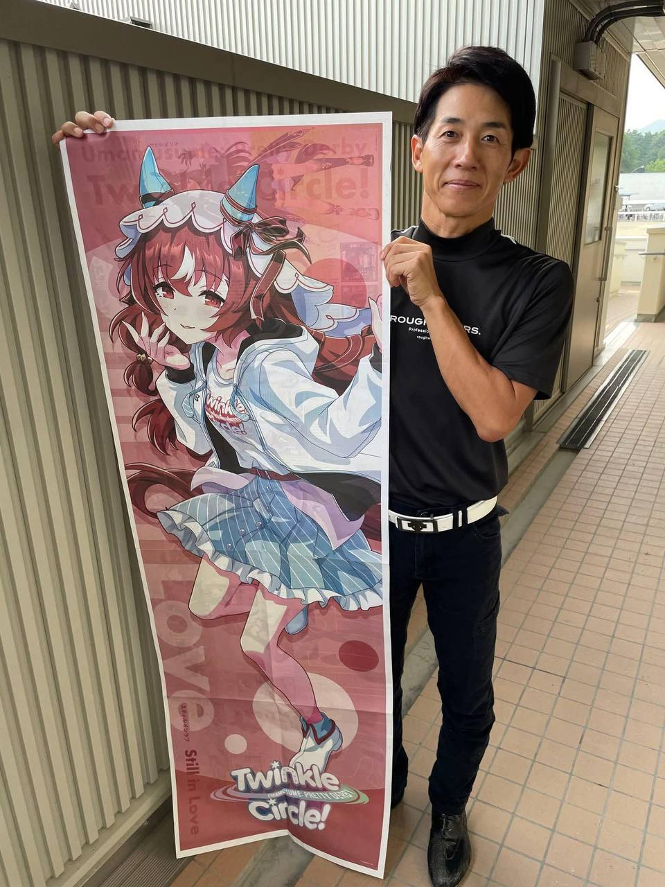

Стилл ин Лав — девушка с длинными оранжево-каштановыми волосами длиной до пояса.
У нее красные, полуприкрытые глаза с темно-красным кольцом вокруг зрачка, что придает
ей загадочный или зловещий вид. Ее гоночный наряд состоит из красного платья с
искусными узорами в виде сердец на юбке. Сзади у нее длинная красная юбка, украшенная
большими белыми бантами, а под ней видна светло-голубая юбка. Она носит белую вуаль с
красной окантовкой и синие накладки на уши, обернутые красными ремешками.
В Uma Musume у всех персонажей есть украшение (обычно бантик) на одном из ушей. Украшение на
правом ухе означает, что настоящая лошадь была жеребцом, на левом ухе — кобылой. У Стил ин Лав
красные ленточки на левом ухе, т.к. Стил ин Лав в реальной жизни действительно является кобылой.
Цветовая палитра её гоночного наряда и ремешки её платья в форме "X" являются отсылкой
на гоночный костюм её жокея.

Стилл ин Лав и её жокей
На её вуали можно увидеть красные нити. Красная нить символизирует любовные отношения и
судьбоносные встречи в целом.
О Стилл ин Лав
Стилл ин Лав и её жокей Хидеаки Миюки на Джапанис Оакс 2003 года
Стилл ин Лав (2 мая 2000 – 2 августа 2007) — японская чистокровная скаковая лошадь, кобыла.
Выиграв свою единственную гонку в юношеском возрасте, она стала лучшей кобылой своего поколения
в Японии, выиграв соревнования Окашоу, Юшун Химба и Шукашоу, чтобы завоевать Тройную тиару в
2003 году. Она продолжала тренироваться еще два года, но не смогла победить снова и в 2005
году закончила свою карьеру. Она родила только одного жеребенка, после чего умерла в
возрасте семи лет в 2007 году.
Имя на японском: スティルインラブ
Происхождение имени: Стилл ин Лав (Still in Love) значит "Всё еще влюблёна" на английском.
История гонок: [5-2-1-8], включая тройную тиару 2003 года.
Интересные факты

Как и в случае с другими персонажами, карьерный сценарий и характер Стилл ин Лав основан на
реальной лошади и ее отношениях с жокеем Хидеаки Миюки. В реальной жизни Миюки испытывает
глубокое уважение к Стилл ин Лав, поскольку эта лошадь была первой, на которой он одержал
победу в G1. Он был её единственным жокеем на протяжении всей ее гоночной карьеры, и в
какой-то момент он даже в шутку сказал, что сбежит с лошадью, если больше не сможет на
ней ездить. В конце своей карьеры лошадь страдала психическим
расстройством, что повлияло на ее результаты в скачках, но, несмотря на это, Миюки оставался
ее жокеем.
В игре характер Стилл ин Лав можно описать как "яндере". Яндере — это типаж персонажей в
аниме, манге и других произведениях, который характеризуется двойственностью: с одной стороны,
это милый и заботливый человек, а с другой — одержимый и психически неуравновешенный из-за
сильной любви.
У настоящей Стилл ин Лав были зафиксированы проблемы с психикой под конец её карьеры
(предполагается, что именно по этой причине она так и не оправилась после поражения на Кубке
QEII).
Некоторые фанаты предположили, что Стилл ин Лав сошла с ума из-за того, что заметила
невесту Хидеаки, которая случайно оказалась на одной из гонок лошади.
Более правдоподобной причиной является то, что она – инбридинг 3х3 от Хэйл ту Ризон.
Это считается рискованным как для физического, так и психического состояния потомка.
Это сказалось на многих потомках Хэйл Ту Ризон, включая Стилл ин Лав.

Карьерный сценарий Стилл ин Лав
Хидеаки Миюки был очень консервативным жокеем, который обычно действовал осторожно, но он
обнаружил, что добивается лучших результатов, когда во время гонок действует агрессивно.
Это одна из возможных причин того, что Стилл ин Лав в игре описывают во время гонок как
"жаждущую битвы".
В одной из концовок её карьерного сценария в игре Стилл ин Лав сбегает из академии.
В итоге игрок находит Стилл ин Лав и воссоединяется с ней. Это отсылает на то, как жокей
настоящей Стилл ин Лав как-то сказал, что сбежал бы с лошадью.
В одном из событий в сценарии Стилл ин Лав в игре, "Безумие по спирали", присутствует выбор ответа, который на
самом деле не дает игроку никаких вариантов. Этот прием часто используется в визуальных хоррор-новеллах или в
разговорах с персонажами яндере. В "Безумии по спирали" есть распространенная ошибка в транскрипции двух японских
кодов: Shift_JS/UTF-8, в эпоху веб-сайтов, основанных на www (как раз в то время, когда настоящая Стилл ин Лав активно
принимали участие в скачках). Если пользователь не выберет Shift_JS для просмотра таких веб-сайтов, на всей странице
будет отображаться бессмыслица.

"Безумие по спирали"
Ее любовь к сладкому отражает настоящую черту её жокея Хидеаки Миюки.
В одном из событий своего сценария в игре Стилл ин Лав играет в гольф, что отражает хобби Хидеаки
Миюки. Также в этом событии появляется Хокко Тарумаэ (еще одна знаменитая лошадь, на которой ездил Миюки).
Еще одна ее характерная черта в игре — это малоизвестность и незаметность. В одной из концовок ее
карьерного сценария кажется, что все о ней полностью забыли, за исключением нескольких персонажей
(таких как тренер и Эдмайр Грув).
Это может быть отсылкой к тому, что она была единственной лошадью с тройной короной/тиарой, которая не получила
свой плакат в серии JRA "Герои".
Её также иногда называют "самой слабой обладательницей тройной короны/тиары". После своих достижений она не
смогла выиграть ни одну гонку из-за проблем с темпераментом и отказа тренироваться после Роуз Стейкс в
2003 году.

Хидеаки Миюки
На одном из событий в её сценарии в игре присутствует кохай (японский термин, означающий «младший»,
«младшего по рангу» или «ученика» в иерархических отношениях.) тренера, который обращается к игроку за помощью.
Кохаем тренера является Кеничи Икэдзое, и так зовут настоящего кохая жокея Стилл ин Лав. В реальности они хорошие
друзья.
У настоящей Стилл ин Лав плохо получается есть морковку, вместо этого она покусывает ее, и с нее падает много крошек.
Временами лошадь может выглядеть довольно неуклюжей. Этот факт был перенесен в игру. В игре в ходе беседы в
главном холле академии, Хокко Тарумаэ угощает Стилл ин Лав десертом. Когда Стилл ин Лав пробует десерт, ей трудно
правильно есть его, и в итоге она измазывает себе руки джемом.
Первый секрет в описании Стилл ин Лав в игре гласит: "Если есть сладости, она будет счастлива. Если к ним
прилагается кофе, она будет еще счастливее". Жокей Стилл ин Лав Хидеаки Миюки как-то
сказал:"お菓子がないと生きていけない" ("Нет сладостей - нет жизни").
Второй секрет в описании Стилл ин Лав в игре гласит: "Она часто практикуется улыбаться перед зеркалом".
Хидеаки Миюки сказал в одном из своих интервью, что его типаж — женщины с красивой улыбкой.